← 返回阅读库 · 原论文目录
论文讲解阅读文档 · 表征学习 · v162
Evolving Losses for Unsupervised Video Representation Learning[2002.12177]
视频时长 00:18:32；讲解文字 8,008 字符；提取讲解画面 41 张。按视频原顺序阅读，每段文字保留时间戳。
文字来自整段视频的自动语音转写，按自然停顿分段，并与 PPT / 论文页面 / 演示画面对齐。未将讲解压缩为摘要；术语、数字和口述公式请结合画面及原论文核对。 阅读稿已校正规范部分明确术语误识别；原始逐字稿和每处修改记录另行保留。
讲解画面为源视频截图（640×360），不是可编辑 PPT 文件。全片按每秒 2 帧扫描内容变化，逐步展开页保留；连续动画保留代表画面。清晰度受源视频限制。
下载完整资料包 · 含离线 HTML、PDF、Word、全部 PPT 画面和字幕。
原论文与材料
Evolving Losses for Unsupervised Video Representation Learning · 下载完整 PDF（13 页）
按时间阅读
00:00:00–00:00:22 · 画面 001
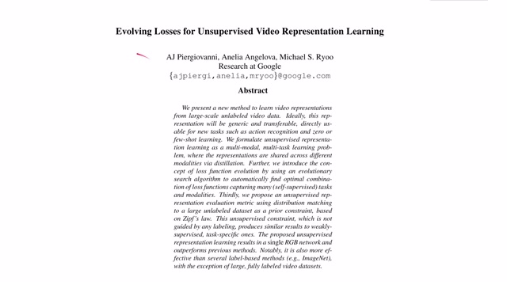
00:00:00–00:00:22 · 画面 001大家好,今天我们来介绍 Involving Laws for Unsupervised Video Representation Learning 这篇论文，把 Unsupervised Representation Learning 定义成一个 Multimodal Multitask 的这么一个学习任务，期望通过结合不同 Unsupervised Learning 的方法来综合学习到一个好的 Video Representation
00:00:22–00:01:04 · 画面 002
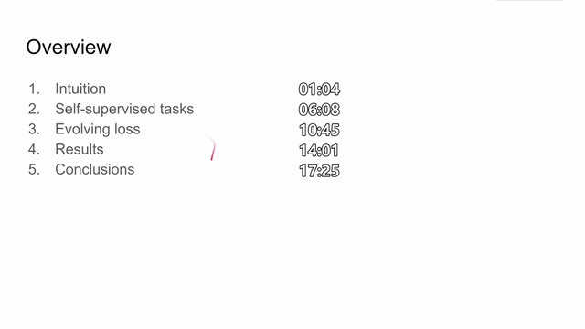
00:00:22–00:01:04 · 画面 002那么在今天的视频中呢，首先我们会从 intuition 讲起，就是我们如何构造定义这一个 unsupervised learning 的问题，以及为了达成这样的任务我们中间需要解决哪些问题，然后呢我们会介绍一下本文涉及的所有的 self-supervised 或者是 unsupervised 的这些任务，它具体使用了哪些手段来得到一个好的 representation然后呢是这个 involving loss，也就是我们怎么样把这些手段结合在一起来获得一个好的 loss function，那么最后呢是作者汇报的结果以及对全文的一个总结，那么首先本文想要学习一个好的 video representation，那么什么是一个好的 video representation 呢，这里作者把它定义成了一个 multimodality multitask 的这样一个任务
00:01:04–00:01:05 · 画面 003
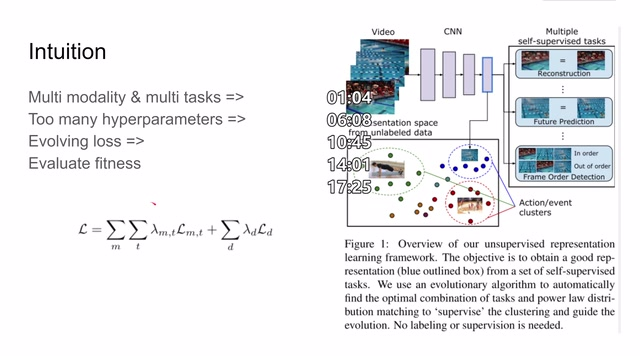
00:01:04–00:01:05 · 画面 00300:01:05–00:03:05 · 画面 004
00:01:05–00:03:05 · 画面 004其实这是非常好理解的，比如说我们看到一个视频，我们单看这个视频中的画面就可以看到这是体育场馆里人们在这个比赛游泳，但是我们通过这个画面其实脑海里就自动能够脑补出来游泳场的声音，还有比如说这里游泳运动员他在跳台上准备就绪那么下几秒发生的肯定是伴随着发令枪响这些游泳运动员跳入水中那么这些画面对于人来讲其实只要看到这一幅图像是都可以推导出来的那么作者就想我能不能训练一个网络使他看到这样一张图像之后就也能想到这么多和人想的这么多的东西一样它可以包括里面的声音的 representation
它可以包括下一帧未来几帧的 representation 等等等等这样子呢我们是不是就能够学到一个好的 representation用来解决后续的各种比如说动作识别等等这样的问题所以呢作者把这个问题定义成了 multimodality modality 也就是比如说声音彩色图像光流灰色图像等等等等这些不同形式multitask也就是作者会使用多种的self-supervised 的手段那么这样呢我们使用 multimodality multitask就会带来另一个问题我们如果把这些 self-supervised
或者是 unsupervised 这些 loss都加到我们最后一个大的 loss function 里面对于超参数的调整来说那将是一个灾难看这里对于我们的每一个 modality对于每一个 task我们都需要给它分配一个 hyperparameter来调整这个 loss在整个 loss function 中的权重这是一个非常闹心的任务那么与此同时作者还希望我能从图像一帧图像中解除这些所有的信息，我们把从其他网络从声音网络从光流网络从灰度网络他们这些网络中的 embedding 这些 representation 都集成到我们 RGB 网络中，其实这相当于是一种蒸馏的过程，那么这同样也是一堆 loss 对吧，一堆 hyper parameters
00:03:05–00:03:46 · 画面 005
00:03:05–00:03:46 · 画面 005那么为了调制这么多的 hyper parameters，那么作者就想到我能不能使用一种叫做 involving loss 使用最优化的手段来让计算机帮我们搜寻出一个好的 combination 来把这些 loss 组合起来，那么这个想法是很自然的，但是呢我们马上就会遇到一个问题，我们如何评价我们得到这个 loss 它的质量呢
00:03:46–00:03:47 · 画面 006
00:03:46–00:03:47 · 画面 00600:03:47–00:05:09 · 画面 007
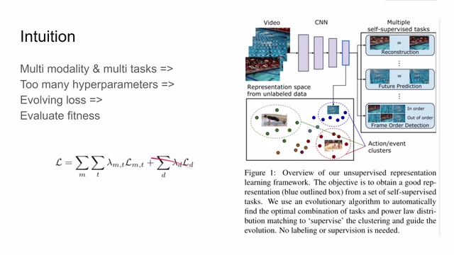
00:03:47–00:05:09 · 画面 007当然我们可能最想要最直接的就是我拿这个 loss function 我去训练一个模型，然后再去这个测试机上测试一下后面的表现不就可以估计出这个 loss function 的质量了吗，但是我们在学习过程中呢是不能使用 test set，就是我在学习的过程中必须自己能够找到一种方法来评价我当前这个 loss function 的质量那么这也是本文的贡献之一，就是本文定义了如何去找这个 loss function 的 fitness，也就是说我们怎么样评价这个 loss function 合适与否。那么解决了这个问题之后，我们整个论文的逻辑的链条就串起来了，就是我在拿到许多视频之后，我们把它变成 multimodality 的，然后对它进行 multitask 的 self-supervise。那么这个学习的过程的重点呢，就是找到一个好的 loss function。
那么为了找到一个好的 loss function，它的本质就是通过修改不同的 hyper parameters 来得到这个 loss function 的 fitness，来评价这个 loss function 的好坏。那么最后不断的进化出一个好的 loss function，最终拿这个最后进化出的 loss function 来去训练整个这个大的模型 multi modality multitask 的这个一个模型，从而获得最终的 latent representation。
00:05:09–00:05:10 · 画面 008
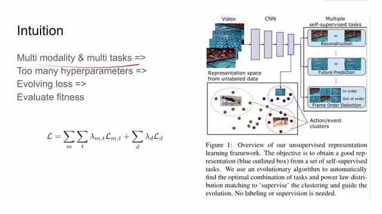
00:05:09–00:05:10 · 画面 00800:05:10–00:05:17 · 画面 009
00:05:10–00:05:17 · 画面 00900:05:17–00:05:41 · 画面 010
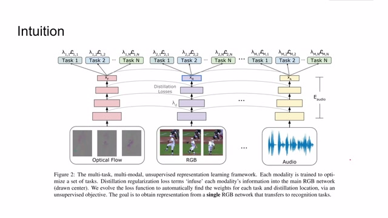
00:05:17–00:05:41 · 画面 010那么这张流程图反映的就是本文定义的 multi modalitymulti task learning 的这么一个过程。这里我们看到比如说这里使用了光流、RGB 和视频的声音，把这些不同的 modality 送到我们的 encoder 里面，然后使用 encoder 学到的 later representation 去执行不同的任务。同时我们把想从声音、从 optical flow 这些 modality 学到的信息。
00:05:41–00:05:42 · 画面 011
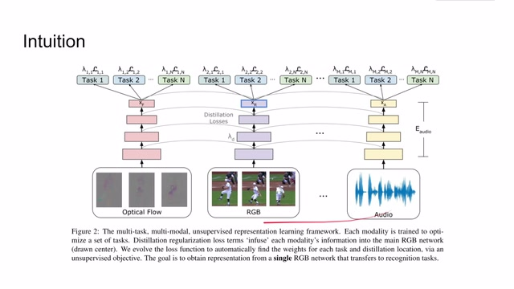
00:05:41–00:05:42 · 画面 01100:05:42–00:06:08 · 画面 012
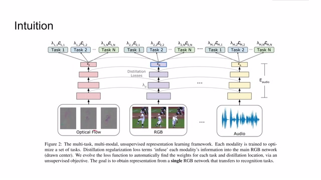
00:05:42–00:06:08 · 画面 012征流到我们中间的 RGB 的网络中，最终呢我们就会得到一个强的 Latent Representation，它呢只使用 RGB 的信息就可以解除一个 Latent Representation，使它能够包含其他的这些网络中的信息。那么这个信息呢将应该是一个非常强的，可以帮助我们进行动作识别啊等等等等后续下游任务的一个 Representation。那么我们具体来看这个 Self-Supervised Task 里面包含了哪些任务呢。
00:06:08–00:08:08 · 画面 013
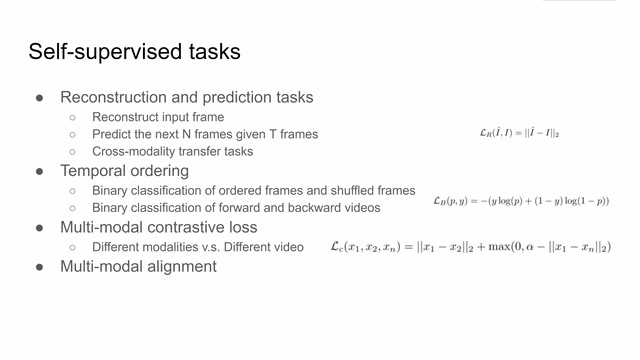
00:06:08–00:08:08 · 画面 013首先像最经典的 reconstruction and prediction task，比如我们在训练 VAE 或者 autoencoder 的时候，我们输入一个图像然后把它重建出来，这就是一个最经典的 reconstruction 的任务。那么还有就是 prediction，我输入 7 张图像之后使它预测未来的 n 张图像。
这就要求我们的 Latent Representation 必须能够足够抽象，同时我们的网络也能够学到视频在时间序列上相关的信息。那么还有一个任务就是 Cross Modality Transfer Task，也就是比如说我现在有灰度图像，我想把它变成彩色图像，我有光流图像，我想把它变成彩色图像等等这样的任务。那么对于所有这类 Reconstruction and Prediction 的任务。
我们都可以使用 reconstruct frame 和 ground truth 它们之间的 L2 loss 来训练这个 self-supervised 的这个 task。那么第二大类的任务呢就是 temporal ordering，也就是时序上的排序。那么第一个任务呢就是我拿出一些帧让这个网络来判断这些 frames 是否是按时间顺序发展的，那么这是一个二分类问题。
那么第二个任务呢我们希望他来判断这个视频是在正向播放还是在反向播放呢，那么这也是一个二分类问题。那么对于所有这种二分类问题呢，我们使用二元的这个 cross entropy 就可以来定义它的 loss function。那么第三类问题呢就是 multimodality contrastive loss。这个 loss 其实就是我们之前介绍的 triplet loss，那么与 TCN 那篇文章相似的就是我在视频的同一个时刻的 modality，它们的 later representation 应该尽量接近，而对于同一个视频不同时刻甚至是不同视频的 modality，哪怕即便它们是相同的 modality，比如说都是 RGB 图像，我希望它们的 later representation 也要相互远离，那么所以我们这里看到一个
00:08:08–00:08:32 · 画面 014
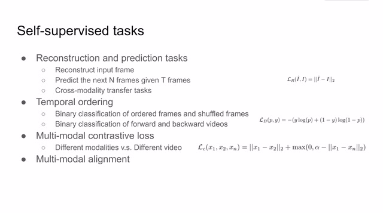
00:08:08–00:08:32 · 画面 014形如 triplet loss 这么一个 loss function 来作为 multi-modality contrastive loss。如果对这方面想了解更多，欢迎一起查看我们之前关于 TCNTime Contrastive Networks 那篇论文的视频。那么最后一个任务叫做 multi-modality alignment，我们看到这幅流程图就是我们在不同的 modality 中，比如说一个是 RGB，一个是 Audio，我们先采样出一对它们实际上是对齐的样本
00:08:32–00:08:55 · 画面 015
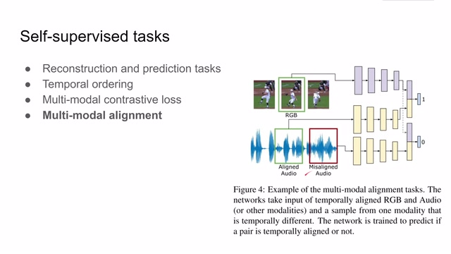
00:08:32–00:08:55 · 画面 015同时也采取一个实际上没有对齐的样本，我们同样的也是定义一个二分类的问题，那么这个就是 multi-modality alignment 任务。那么实际在作者的训练中，作者使用了四种 modality，分别是 RGB 图像、声音、光流还有灰色图像。那么同时他定义了这么多任务，比如说这个 shuffle 就是判断 input frame 是否是按照正常的时序
00:08:55–00:10:45 · 画面 016
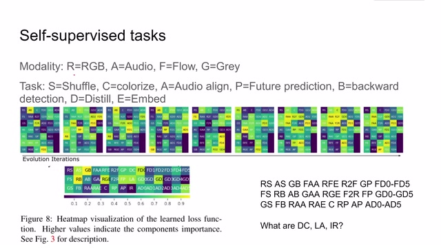
00:08:55–00:10:45 · 画面 016Colorize 就是从 Gray Modality 来变到 RGB Modality，还有这个 Audio Align 其实就是 Alignment 一个问题，Future Prediction, Backward Prediction, Distill 等等这些我们之前都介绍了。这个 Invite 是我们之前提及的第三个任务，是用类似于 Tribal Light Loss 来使得相同时刻的 Inviting 相互接近，不同时刻的 Inviting 相互远离。那么经过这些 Modality 和任务的相互组合
这里作者一共得到了 39 个 self-supervised 的任务，其中呢这个 FD0 到 FD5 比如这里表示的是从光流到 RGB 图像的 distillation0 呢代表的就是最开始的那一层，然后 5 呢就是代表着最高的那一层，也就是这六层的输出，它们每一层之间的 representation 的 L2 distance。中间这张图呢演示了这 39 个 loss 它们的权重他们的 hyper parameters 是如何随着这个进化的这个次数来逐渐迭代的。那么下面这层呢就是作者通过迭代了很多次之后，作者得到一个最终的好的所有 loss function 的权重的集合。但是有一点很奇怪就是这里作者列出了一共 42 个 loss function，多了这个 dcla 和 l，目前呢我在论文中没有找到相关的说明，这个呢我会在
咨询完作者之后呢，把相关的更新放在评论区。那么解决完了 self-supervised 的 task 之后呢，我们就要看我们最后形成一个大的 loss function，我们应该如何评价这个 loss function 呢。这里呢作者就借用了一个先验知识，就是他通过观察我们的这些所有的数据库，他发现数据库中样本的数量和这个样本的 label 它呢其实满足 diff distribution
00:10:45–00:11:56 · 画面 017
00:10:45–00:11:56 · 画面 017Zipf distribution，简单来讲就是一个类别的样本的数量跟这个类别样本数量的排序 rank 的这个值它是成反比关系的，或者说我们常见的巴尔定律，比如说 20%的人掌握 80%的财富，类似于这样的话。那么作者发现最常见的 action 在他的 samples 占了这个样本中的绝大多数的这个 samples 的数量，剩下的一些不常见的 action 他们的这个三伏的数量呢就小很多，那么在得到这样一个先验知识以后呢，作者就想如果我们对 little representation 进行聚类，对聚类后的这个每个类别的样本数量我们做出一个它的 distribution 来，那么这个 distribution 是应该和这个 ziff distribution 是非常接近的。那么这里呢，作者就使用了 k-means 来找到 k 个 centroid，也就是聚类中心。
00:11:56–00:11:57 · 画面 018
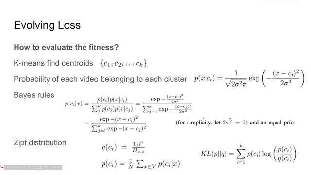
00:11:56–00:11:57 · 画面 01800:11:57–00:12:01 · 画面 019
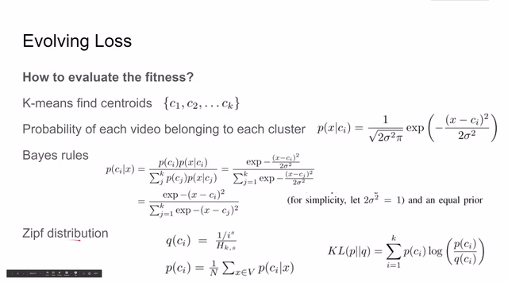
00:11:57–00:12:01 · 画面 01900:12:01–00:12:02 · 画面 020
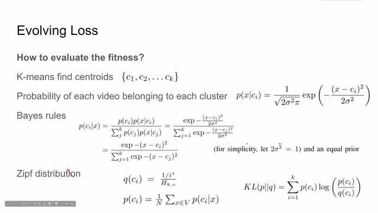
00:12:01–00:12:02 · 画面 02000:12:02–00:12:54 · 画面 021
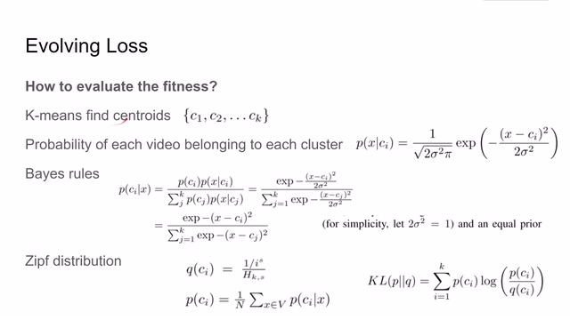
00:12:02–00:12:54 · 画面 021因为 K-Means 可以被认为是混合高斯模型，也就是 Gaussian Mixture Model，那么所以每一个视频属于相应聚类更新的概率就是一个高斯分布。那么根据 Bias 原理，因为是 K-Means 聚类来的，所以每一类它的 Gaussian Distribution 它的方差都应该是相同的。那么这里为了作者为了简便，把它都设置成 1。那么同时作者假设每一个 class 的 probability 应该是相等的。
也就是这里的 pcg，那么这样通过 base 定理，我们就得到了一个形如 softmax 的 probability。然后我们就可以通过观测到的样本来推测出这一个采样出来的数据集中，那么每个 class 的 probability 也就是这个式子。而这个式子在理论上是应该同 zip distribution 是非常接近的。那么如何衡量两个 distribution 的相似程度呢？
00:12:54–00:12:56 · 画面 022
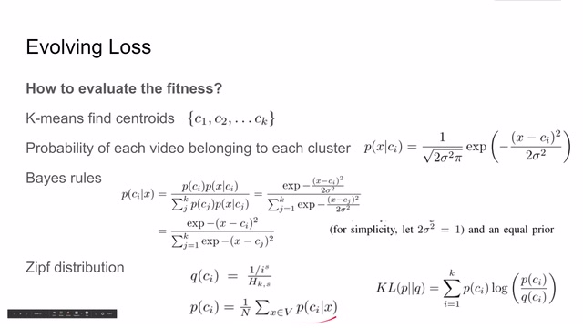
00:12:54–00:12:56 · 画面 02200:12:56–00:13:09 · 画面 023
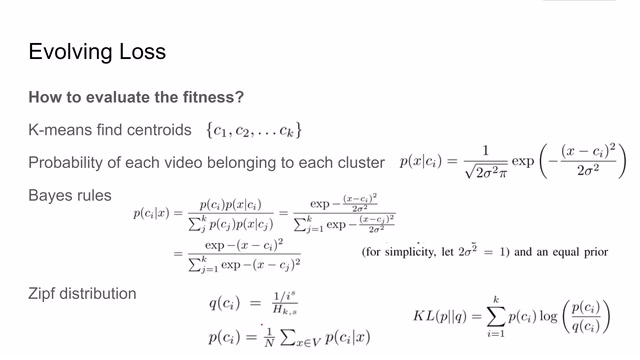
00:12:56–00:13:09 · 画面 023那么很自然而然的，我们就想到了 KL divergence。也就是说，作者最后使用了这么一个 KL divergence，就可以描述我们使用这个 loss function 训练出的 latent representation 是不是一个好的 latent representation，来进而决定我们选择的这个 loss function 当前的 loss function 的这些 hyper parameters 的组合是不是一个好的组合。那么当我们得到了这样一个组合的评价之后，我们如何对它进行优化呢？
00:13:09–00:13:10 · 画面 024
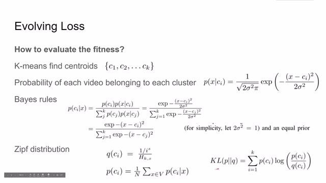
00:13:09–00:13:10 · 画面 02400:13:10–00:13:14 · 画面 025
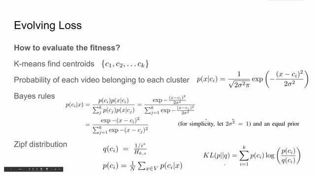
00:13:10–00:13:14 · 画面 02500:13:14–00:13:30 · 画面 026
00:13:14–00:13:30 · 画面 02600:13:30–00:14:01 · 画面 027
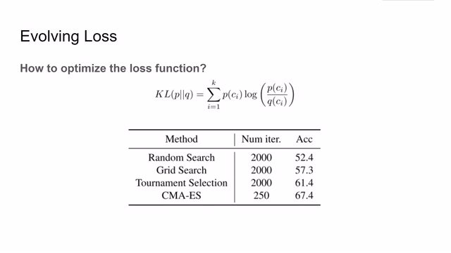
00:13:30–00:14:01 · 画面 027那么这时候，我们就可以掏出所有关于最优化的工具了。那么这里坐着列举了像随机搜索啊，网格搜索啊等等等等。最后坐着发现这个 CMA-ES 中文名应该叫协方差矩阵自适应进化策略，这个策略它的效果是最好的。所以这也是本文为什么叫做 involving loss，就是通过这个进化策略来学到一个好的 loss function。好的，我们来看一下这篇论文汇报的结果。那么这篇论文呢，在 HMDB UCF 101 和这个 Kinetics 这三个数据集上呢，分别做了评测，做了设置了三种评价的方法。那第一种呢，就是我得到 K-Means 的这个中心之后呢，使用最近林就可以得到新样本它所属的 class。那么第二种呢，就是我固定住前面的 later representation，我加一层这个 linear layer。
00:14:01–00:14:32 · 画面 028
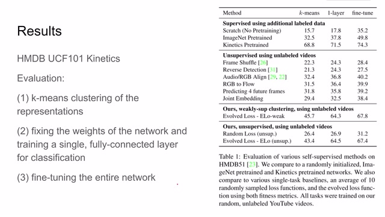
00:14:01–00:14:32 · 画面 028来测试这个 latent representation 的表现。那么第三个呢，就是我在现在 latent representation 的基础上，在加了 linear layer 之后再 fine-tuning 整个这个网络。那么很显然，这个这三种评价方法是一种比一种效果应该要好的。那么看到这里对比了一些 supervised 方法，一些其他的 unsupervised 方法，本文提出的方法还有就是 random 的 hyper parameter 来得到的方法。
00:14:32–00:14:33 · 画面 029
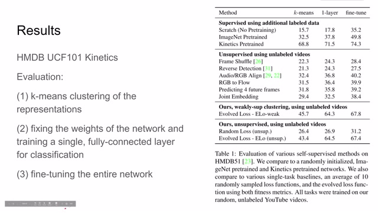
00:14:32–00:14:33 · 画面 02900:14:33–00:14:37 · 画面 030
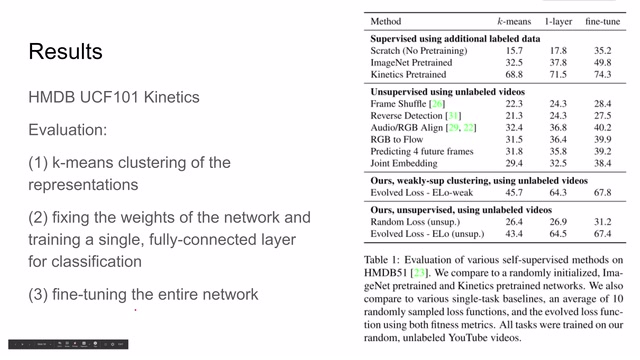
00:14:33–00:14:37 · 画面 03000:14:37–00:14:38 · 画面 031
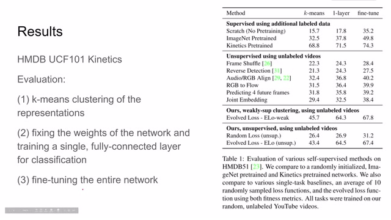
00:14:37–00:14:38 · 画面 03100:14:38–00:15:33 · 画面 032
00:14:38–00:15:33 · 画面 032那么从结果来看，伦文的方法比这些其他的 unsupervised 方法是要有大幅度的提高的。那么这里作者还介绍了另一种配置叫做 evolved loss week，这个就是我们在计算 K-means 的时候使用一些有标记的样本，那么这些样本可以帮我们确定每一个 centroid 它应该对应具体哪一个 class。那么这样我们算出了 KL divergence 应该是最准确的 KL divergence。
我们看到即便没有这样的这个 label，作者提出的方法依然能够实现与之相称的结果。那么在这一点里，作者使用 fine-tune 这种评价方法，对比了其他 SOTA 这些方法，还有一些 Unsupervised 这些方法。那么肯定的，本文提出的方法与这个 Supervised 方法相接近，远超于其他的各种 Unsupervised 方法。
00:15:33–00:15:34 · 画面 033
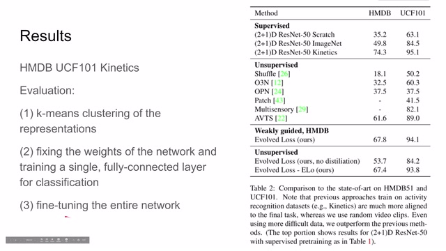
00:15:33–00:15:34 · 画面 03300:15:34–00:15:49 · 画面 034
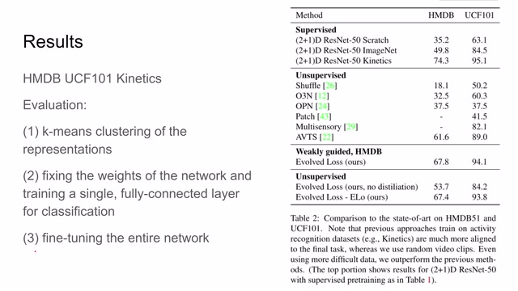
00:15:34–00:15:49 · 画面 03400:15:49–00:16:26 · 画面 035
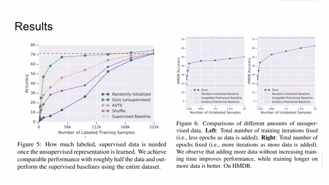
00:15:49–00:16:26 · 画面 035那么在这里，作者展示了我使用多少有 label 的数据能够达到 supervised 的程度。可以看到大概接近有了一半的有 label 的数据之后，本文提出的 unsupervised 的方法就能够逼近 supervised 的方法。可以说，本文提出的方法在 data efficiency 上是非常不错的。那么同样，作者还做了另外的实验来证明。
说不同数量的 unsupervised data，哪怕你没有标记的数据，只要你向里加入更多多样的无监督的样本，哪怕训练时间固定，那么它依然能够获得更好的结果。那么除去评价之前的 little representation 呢，作者这里还想知道我们提出的这个 Zipf distribution、KL divergence 这一套东西，它是不是一个好的评价标准，可以用来指导我们的 loss function 这个 loss 的进化呢
00:16:26–00:16:28 · 画面 036
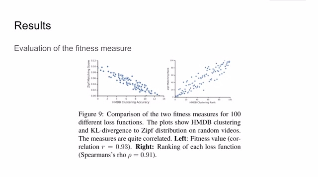
00:16:26–00:16:28 · 画面 03600:16:28–00:17:10 · 画面 037
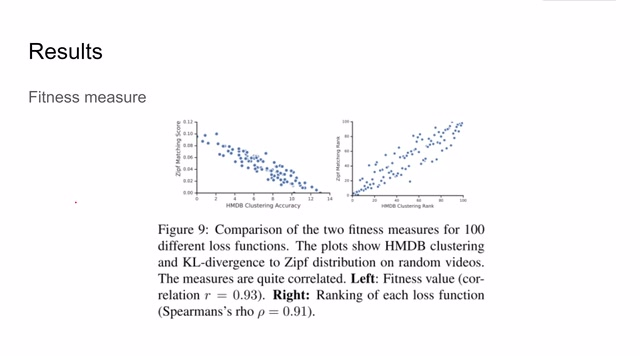
00:16:28–00:17:10 · 画面 037那显然结果是可以的。为了更显示的证明这个问题呢，作者呢这里对比了 100 种这个不同的 loss function。一个呢是使用 hmdb 有 label 的这样的数据和我们的和 ziff distribution 之间的 kl divergence 这个 fitness 来做对比。然后发现呢，这两种这个 fitness 的 value 它们呢是非常相关的。
他们的相关系数非常高 Pearson 相关系数呢也到了 0.9 是非常相关的那么说明呢本文提出的这个计算和 Ziff distribution 之间的 KL divergence 这个用来评价 loss function 的方法呢是一个好的评价方法
00:17:10–00:17:14 · 画面 038
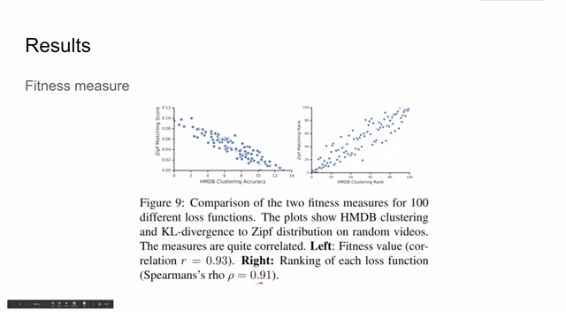
00:17:10–00:17:14 · 画面 03800:17:14–00:17:25 · 画面 039
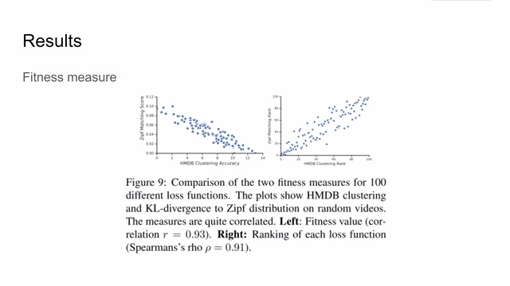
00:17:14–00:17:25 · 画面 03900:17:25–00:18:32 · 画面 040
00:17:25–00:18:32 · 画面 040OK，那么来到结论。我们首先是把 self-supervised 或者说 unsupervised 这个 representation learning 这个问题，把它定义成了 multimodality multitask 加上这个 network distillation 这么一个问题。那么为了解决这样的问题，作者使用了 loss function evolution 这样的策略来进化出一个好的 loss function，使得解决这个复杂的问题变为可能。那么为了实现这样一个进化，我们需要一个好的 evaluation metric。
那么这里呢，也就是作者提出的计算我们当前的 distribution 和 diff distribution 它们之间的 KL divergence 来评价我们当前 loss function 的好坏。那么总的来说呢，这篇文章逻辑上是非常清晰的，实验呢也比较充分。虽然可能一上来看起来是一个比较复杂比较很吓人的这么一篇论文，但是它背后每一步的思想是环环相扣有理有据的。
那么以上呢，就是我对这篇论文的简单的分析。那么还是非常强烈建议大家去读一下本文的原文。那么感谢您的收看，再见。
00:18:32–00:18:32 · 画面 041
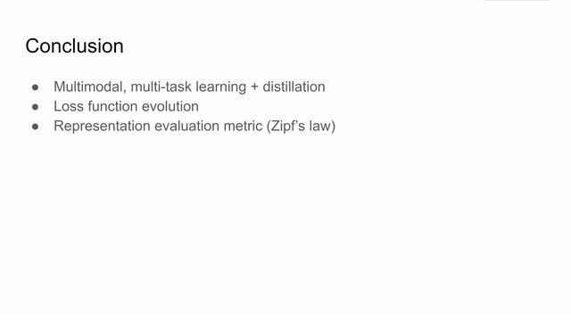
00:18:32–00:18:32 · 画面 041转写与来源说明 · 0 个自动复核提示
保留 81 个原始语音片段，0 个片段触发自动复核提示。提示仅用于定位可能的术语、重复或识别问题，不等于已确认错误。
讲解画面为源视频截图（640×360），不是可编辑 PPT 文件。全片按每秒 2 帧扫描内容变化，逐步展开页保留；连续动画保留代表画面。清晰度受源视频限制。
原视频：paper/合集_2026-10-16_表征学习/[论文简析]Evolving Losses for Unsupervised Video Representation Learning[2002.12177].mp4
SHA-256：f8cd9dedba3ff52d791325c1a5941dad8d289dde8cee4a290de5a59f3e100b3a
全文按视频语音与画面制作。原论文可从上方链接下载；完整资料包保留全文、原始逐字稿、字幕和校对记录。